Drawing tool gallery
Illustrator provides the following drawing tools:
|
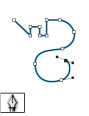 The Pen tool (P) draws straight and curved lines to create
objects. |
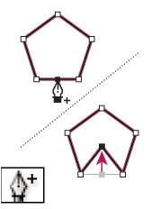 The Add Anchor Point tool (+) adds anchor points to paths. |
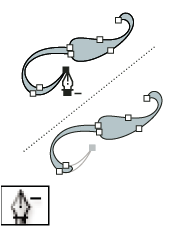 The Delete Anchor Point tool (-) deletes anchor points from
paths. |
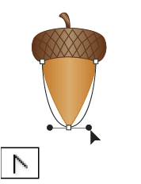 The Convert Anchor Point tool (Shift+C) changes smooth points to
corner points and vice versa. |
|
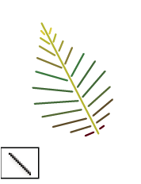 The Line Segment tool (\) draws individual straight line segments. |
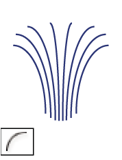 The Arc tool draws individual concave or convex curve segments. |
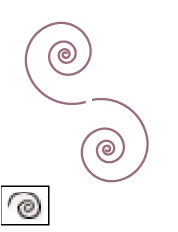 The Spiral tool draws clockwise and counterclockwise spirals. |
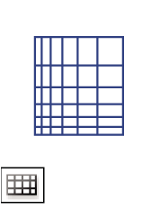 The Rectangular Grid tool draws rectangular grids. |
|
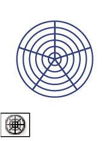 The Polar Grid tool draws circular chart grids. |
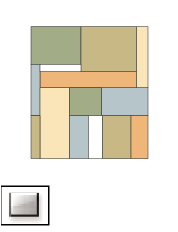 The Rectangle tool (M) draws squares and rectangles. |
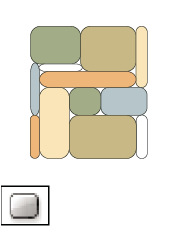 The Rounded Rectangle tool draws squares and rectangles with
rounded corners. |
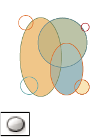 The Ellipse tool (L) draws circles and ovals. |
|
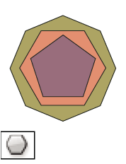 The Polygon tool draws regular, multi-sided shapes. |
The Star tool draws stars. |
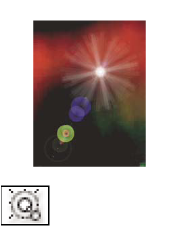 The Flare tool creates lens-flare or solar-flare-like effects. |
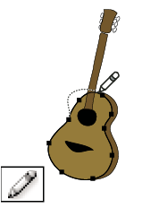 The Pencil tool (N) draws and edits freehand lines. |
|
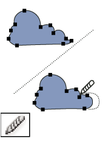 The Smooth tool smooths Bezier paths. |
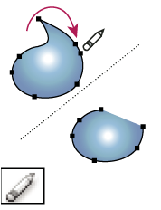 The Path Eraser tool erases paths and anchor points from the
object. |